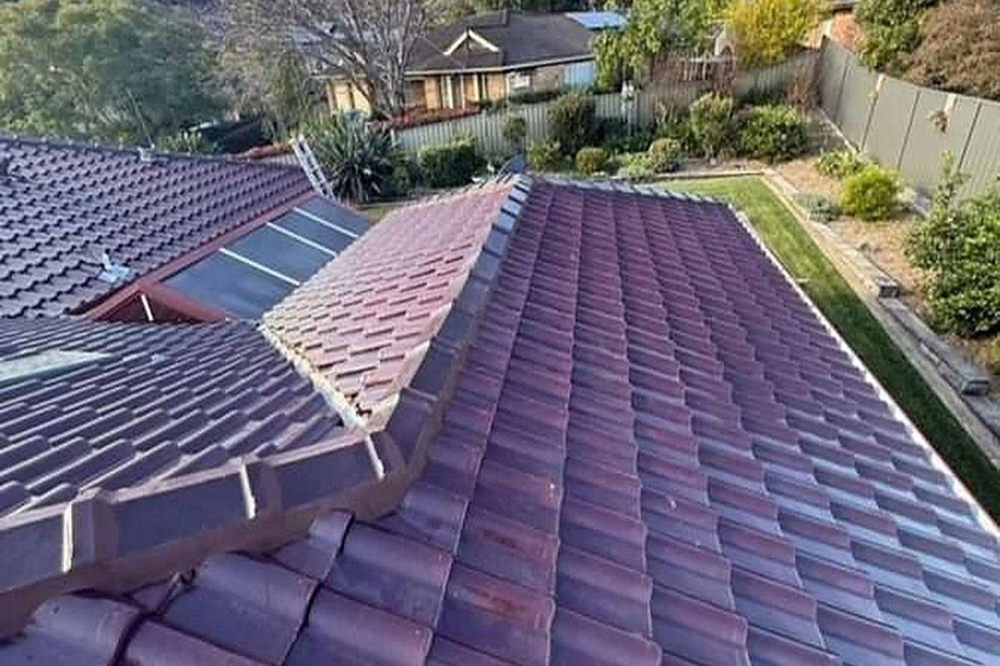
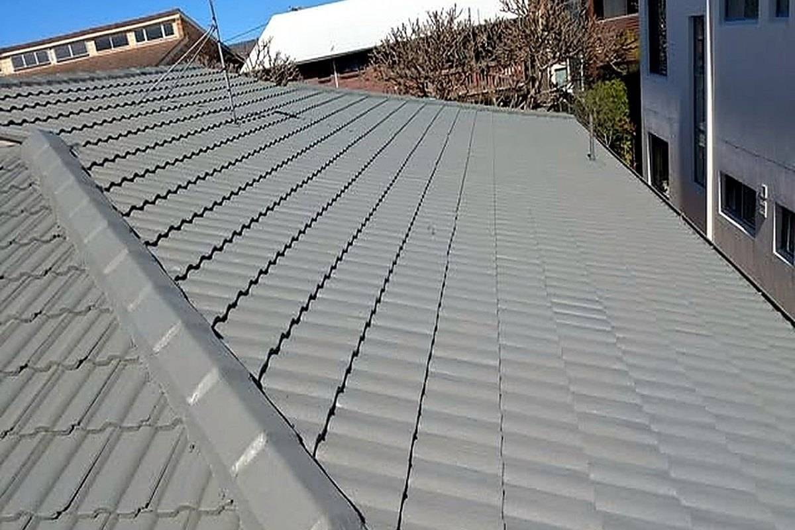
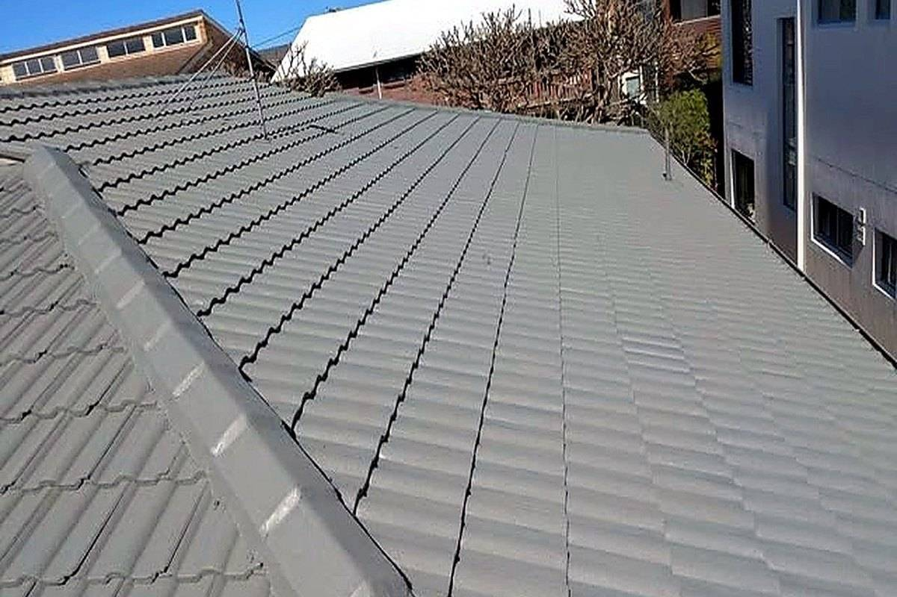

Skylights & vents
Flashed and fitted so they do not become the next leak. Quoted on site.
Repairs documented with photos of what was actually wrong before anything is replaced.
Get a quoteEvery roof is walked first: the quote reflects what the iron and tiles actually need, not a square-metre rate.
Flashed and fitted so they do not become the next leak. Quoted on site.
Broken tiles, cracked bedding, flashings and valleys repaired with matching materials. Explained before it starts.
Traced to the entry point with a hose test and a camera, not guessed from the stain. Done by the crew that quoted it.
Full tile or metal replacement, battens and sarking checked while the roof is open. Priced after it has been looked at.
Repoint, replace, clean and coat where the roof is sound enough to save. Same people, start to finish.
Replaced, re-pitched and connected so water leaves the roof properly. Quoted on site.
A job like this.



Interlocked Roof Restoration keeps its work in the local area and the surrounding suburbs: roof repairs, repairs and the smaller jobs that are easy to put off.
The roof is walked and photographed before a price is given.
Repair or replace is explained with the photos, not just a number.
Work done in one visit where possible, site left clean and gutters cleared.
Tell us what is needed and where. If it is urgent, call.